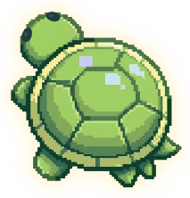

✦ Problemática
El impacto de las bolsas plásticas en las tortugas marinas de Chile. Las bolsas que llegan al mar se parecen a las medusas y las tortugas las confunden con su alimento. Al tragarlas pueden sufrir bloqueos en el intestino, desnutrición y morir.
✦ Introducción
Esta página es parte de la Feria Científica de Ciencias para la Ciudadanía (4° Medio). Aquí podrás entender el problema, ver un vídeo, jugar y reflexionar sobre qué podemos hacer como personas y como sociedad.

✦ Acceso a las secciones
✦ Vídeo de concientización
Aquí irá el vídeo de 2 a 3 minutos.
Guárdalo como media/video-concientizacion.mp4
✦ Guía a la tortuga
Lleva su comida natural hacia ella y clasifica la basura en el contenedor correcto antes de que se acabe el tiempo.
✦ Conociendo el problema
Las bolsas plásticas son residuos de un solo uso hechos con plástico derivado del petróleo. Tardan muchísimo en degradarse y, en el mar, se rompen en pedazos cada vez más pequeños (microplásticos). Para una tortuga, una bolsa que flota se parece a una medusa, y al tragarla puede bloquearle el intestino.
Por el consumo masivo de bolsas desechables (antes de la ley, unas 200 por persona al año en Chile), la mala disposición de los residuos y el poco reciclaje y reutilización. Las bolsas llegan al mar desde ciudades, ríos y costas, y las corrientes las arrastran. Las tortugas que comen medusas, como la laúd y la olivácea, tienen más riesgo de confundirlas.
En el océano Pacífico y en la costa chilena. En Chile se registran cinco especies de tortugas marinas: laúd, verde, cabezona, olivácea y, en Rapa Nui, carey. No anidan en nuestras playas, pero la Corriente de Humboldt les ofrece alimento, y llegan sobre todo ejemplares juveniles y subadultos.
A las tortugas marinas, que están protegidas y son muy vulnerables, y a otros animales marinos. También a los ecosistemas, donde las tortugas ayudan a controlar medusas y a mantener los pastos marinos, y a las personas que dependen de un mar sano.
✦ La evidencia
Se estima que hasta el 52 % de las tortugas marinas del mundo podría haber ingerido plástico u otros residuos.

Cada dibujo representa 10 de cada 100 tortugas. Las grises son las que podrían haber ingerido residuos (≈ 52 %).
- Las tortugas jóvenes, en su etapa oceánica, son las de mayor riesgo, y la tortuga olivácea es la especie más expuesta.
- De los residuos que ingieren las tortugas, el plástico es el más común.
- Antes de la Ley 21.100 se usaban unos 3.400 millones de bolsas plásticas al año en Chile. Según el Ministerio del Medio Ambiente, la ley ha evitado más de 13.600 millones de bolsas.
- En La Puntilla (Arica) se estimó una agregación de 514 tortugas verdes, pero la comunidad local percibe que los avistamientos han disminuido.
Dónde se han registrado tortugas marinas en Chile
- Arica y Tarapacá (18° S)Primeros registros. Aquí son más frecuentes, en aguas de 18,3 a 23,8 °C.
- Centro de ChilePresentes como áreas de alimentación y tránsito.
- Magallanes (53° S)Límite sur de los registros. Suelen ser ejemplares en mal estado.
✦ ¿Por qué debería importarnos?
- Una bolsa tragada puede bloquear el intestino de la tortuga y causarle la muerte.
- Pueden sentirse llenas y morir de hambre.
- Seis de las siete especies de tortugas marinas del mundo están en la Lista Roja de la UICN.
- Sin tortugas se altera el equilibrio de medusas y pastos marinos.
- Más residuos en playas y costas.
- Posibles efectos en el turismo y en la pesca.
- Los microplásticos podrían volver a nosotros por la cadena alimentaria.
✦ ¿Qué podemos hacer?
- Usar bolsas reutilizables.
- Reutilizar las bolsas que ya tenemos.
- Separar y reciclar los residuos.
- Hacer campañas y limpiezas de playa.
- Instalar puntos de reciclaje.
- Conversar y compartir lo aprendido.
- Fiscalizar que la ley se cumpla.
- Regular otros plásticos de un solo uso.
- Responsabilidad de quienes producen los envases.
Las acciones individuales ayudan, pero no bastan: este problema también tiene dimensiones políticas, económicas, industriales e institucionales.
¿Hasta qué punto nuestras decisiones individuales contribuyen a este problema y dónde comienza la responsabilidad de las empresas, las instituciones y el Estado?
✦ Fuentes y referencias
- Ley 21.100, que prohíbe la entrega de bolsas plásticas de comercio en todo el territorio nacional (2018). Biblioteca del Congreso Nacional de Chile. bcn.cl
- Ministerio del Medio Ambiente de Chile. mma.gob.cl
- Subsecretaría de Pesca y Acuicultura (2025). Informe Técnico (R. PESQ.) N° 147: Renovación de veda extractiva de mamíferos marinos, tortugas marinas y pingüinos. Valparaíso. subpesca.cl
- Servicio Nacional de Pesca y Acuicultura (Sernapesca): registro de varamientos y rescate de fauna marina. sernapesca.cl
- Schuyler, Q., Hardesty, B. D., Wilcox, C. y Townsend, K. (2014). Global analysis of anthropogenic debris ingestion by sea turtles. Conservation Biology, 28(1), 129-139. pmc.ncbi.nlm.nih.gov
- Schuyler, Q. A. y colaboradores (2016). Risk analysis reveals global hotspots for marine debris ingestion by sea turtles. Global Change Biology, 22(2), 567-576. pubmed.ncbi.nlm.nih.gov
- Programa de las Naciones Unidas para el Medio Ambiente (PNUMA/UNEP). Fatal attraction: Turtles and plastic. unep.org
- La Tercera (2020). ¿Adiós a las bolsas plásticas? Cifras del Ministerio del Medio Ambiente sobre el uso de bolsas antes de la ley. latercera.com
- G5 Noticias. A ocho años de la Ley: ¿Ha servido la norma «no más bolsas plásticas»? Cifras del Ministerio del Medio Ambiente. g5noticias.cl
- Pauta (2025). Día Internacional sin Bolsas Plásticas: alertan que aún se observa su uso en Chile. pauta.cl
- Fotografía de portada: